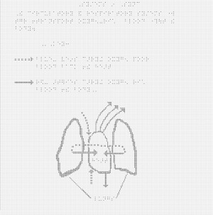

View a larger version of this image.
This image of the heart and lungs is taken from a middle school health textbook. The full page where it appears can be seen below.
View a larger version of this image.
This image can be made accessible with an image description or by using a tactile graphic. The choice of modality varies depending on factors such as the information to be conveyed, grade level, student knowledge and experience, and the image itself.
Written image descriptions are widely used for images that illustrate a process or simple concept. Tactile images are used for images or diagrams where the physical relationships between elements of the image are important.
How the image description is displayed depends on the reading tool being used. In most mainstream reading tools, the description will not be displayed at all, but in tools designed for accessibility (or mainstream tools with accessibility features enabled) the description could be displayed below the image, voiced as part of the content, or both.
This is an example of an image in which text is embedded in the image and is not accessible. The content needs to be extracted from the image and included in the description.
Systems in Sync. The circulatory and respiratory systems work together to transport oxygen-rich blood through the body.
A diagram shows a cross-section of a heart between two lungs. Red arrows show the path of oxygen-rich blood cells. Blue arrows show the path of oxygen-poor blood.
View a larger version of this image.
The image above shows how the image description would look when implemented in an EPUB 3 file. The code used to create it is:
<figure aria-describedby="heart-and-lungs-desc">
<img src="images/images/ex1.jpg" alt="The heart and lungs"/>
<figcaption>
The heart and lungs
<details id="heart-and-lungs-desc">
<summary>Description</summary>
<p>
Systems in Sync. The circulatory and respiratory systems work together to transport oxygen-rich
blood through the body.
</p><p>
A diagram shows a cross-section of a heart between two lungs. Red arrows show the path of oxygen-rich
blood cells. Blue arrows show the path of oxygen-poor blood.
</p>
<list type="ol">
<li>Oxygen-rich blood cells travel to the heart from the lungs.</li>
<li>The heart pumps enriched blood cells. They travel through the arteries to the body.</li>
<li>Throughout the body, red blood cells deliver oxygen to cells and remove carbon dioxide.</li>
<li>Veins carry oxygen-poor blood back to the heart.</li>
<li>The heart pumps blood back to the lungs to eliminate carbon dioxide and absorb oxygen.</li>
<li>Red blood cells move through the lungs, taking in oxygen and exchanging it for carbon dioxide.</li>
</list>
</details>
</figcaption>
</figure>
View a larger version of this image.
The image above shows how the image description would look when implemented in a DAISY file. The code used to create it is:
<imggroup><p><img id="ex_1" src="images/ex1.jpg" alt="the heart and lungs" /></p>
<prodnote id="prodnote_000001">
<p smilref="examplar1.smil#p_000001">
Systems in Sync. The circulatory and respiratory systems work together to transport oxygen-rich blood
through the body.
</p><p>
A diagram shows a cross-section of a heart between two lungs. Red arrows show
the path of oxygen-rich blood cells. Blue arrows show the path of oxygen-poor blood.
</p>
<list type="ol">
<li>Oxygen-rich blood cells travel to the heart from the lungs.</li>
<li>The heart pumps enriched blood cells. They travel through the arteries to the body.</li>
<li>Throughout the body, red blood cells deliver oxygen to cells and remove carbon dioxide.</li>
<li>Veins carry oxygen-poor blood back to the heart.</li>
<li>The heart pumps blood back to the lungs to eliminate carbon dioxide and absorb oxygen.</li>
<li>Red blood cells move through the lungs, taking in oxygen and exchanging it for carbon dioxide.</li>
</list>
</prodnote></imggroup>
A tactile graphic allows the image to be interpreted manually. This graphic was developed for microcapsule paper production.

View a larger version of this image.
View a larger version of this image.
The first image contains the diagram and the key. The second image includes all of the numbered text that is part of the original image.